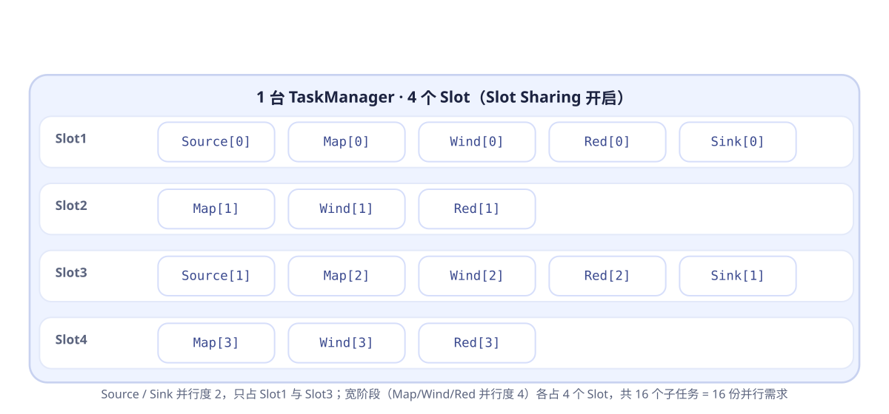

Slot 是 Flink 里"有限内存、一份接一份任务"的最小单元。它怎么切、并行度与它如何换算、为什么多个算子能挤进同一个 Slot——本文从切分讲到共享，并用三个例子彻底讲透。
一句话：Slot 是 TaskManager（一个 JVM 进程）里被切分出来的、能运行一个 Task 的最小资源槽。
每个 TaskManager 本身是一台"能干活的工人"。为了让多个任务互不干扰、又充分利用资源，Flink 把它的资源切成若干份，每一份就是一个 Task Slot：
Slot 更像"一份受限的内存预算"，而不是一个固定 CPU。理想情况下一个 Slot≈一个并发执行线程，但实际并发度还受反压、算子类型影响。好记的口诀：Slot 定了"能同时跑几个任务"的上界，并行度定了"这几个任务内部各开几路"。
切分发生在 TaskManager 启动时：把进程的内存预算均分子线程与任务空间，数目由配置决定。
TaskManager 启动时读 taskmanager.numberOfTaskSlots（默认 1），把该进程的内存预算切成这么多份。切分是静态的：整个进程生命周期内 slot 数是固定的。
flowchart LR
JVM["一个 TaskManager = 一个 JVM 进程"]
JVM --> SS["按 numberOfTaskSlots=4 切分"]
SS --> SL["Slot[0] · Slot[1] · Slot[2] · Slot[3]"]
SL --> T1["Task A ... Task E（每 Slot 同一时刻只有 1 个 Task）"]
| 配置项 | 作用 | 默认 |
|---|---|---|
taskmanager.numberOfTaskSlots | 每台 TaskManager 切成几个 Slot | 1 |
parallelism.default | 未显式指定时算子默认并行度 | 1 |
taskmanager.memory.process.size | 进程总内存，决定每份 Slot 分到的量 | 由 Flink 自动估算 |
并行度把每个算子拆成多个并行子任务，而 Slot 决定了这些子任务能被"同时"放下几个。
关键公式（一个作业视角）：
并行子任务数 = Σ（每个算子的并行度）。每个算子按其 parallelism 被拆成那么多份并行子任务（ExecutionVertex），一份就是一个 Slot 里的运行单元。两步算清楚：
parallelism.default / 算子内写死，优先级：代码最细 > 全局默认）；| 算子 | 并行度 | 说明 |
|---|---|---|
| Source（读 Kafka） | 2 | 一段日志源，拆 2 路 |
| Map（清洗） | 4 | 无状态转换，可高并发 |
| keyBy + Window | 4 | 按键分组，配合并行度取 Sink 同档 |
| Sink（写 ES） | 2 | 外部连接有上限 |
并行子任务数 = 2 + 4 + 4 + 2 = 16。即它最多需把 16 份运行单元放进集群，若集群 Slot 总数 < 16 则只能排队或报资源不足。
算子链与 Slot Sharing 会让多个并行子任务合并/挤进同一个 Task 或 Slot（见第 04 章），因此实际 Task 数或占用 Slot 数往往小于并行子任务总数。但并行子任务总数始终不变，它衡量的是"这份作业对并行的需求上限"。
Source(1) + FlatMap(2) + Sum(2) + Sink(1)
并行子任务数 = 1+2+2+1 = 6
5 个算子均未指定、parallelism.default=3
并行子任务数 = 3×5 = 15
需要满足：本作业所有并行子任务数 ≤ 集群 Slot 总数。
而集群 Slot 总数 = Σ（每台 TaskManager 的 slot 数）。
并行度是"要求"，Slot 是"供给"；供给不足→作业提交/运行时因资源不足而等待或失败。
≈ 机器核数（或核数/2，留给内存），并行度上限 ≈ 所有 TM 的 slot 之和。既利用多核，又避免线程过多导致的上下文切换开销。如果每个子任务独立占 Slot，资源会非常浪费。Flink 用"共享"让一个 Slot 装下更多任务。
= 最大并行度 个 SlotslotSharingGroup() 拆分，做强隔离Slot 定价的是内存配额 + "同时只跑一个 Task"的并发约束，并不承诺独占某颗 CPU 或整块内存。"谁用它"因此是灵活的，只要不超预算即可。
一个 TaskManager 就是一个 JVM，Slot 里的 Task 本质是同进程线程，共享堆、线程池、类加载器；隔离主要落在内存预算上，按份额而非独占，这正是共享的前提。
实时 pipeline 分阶段且很少同时满载：某宽算子被反压/等待 key 时，同 Slot 另一 Task 的算子可能正空闲。让不同 Task 挤进同一 Slot 就好比不同时段的班次共用工位，填满 CPU 空闲期。
算子链把同流水线的多算子合成一个 Task；Slot Sharing 再让多个 Task 共用一个 Slot，同 JVM 线程交错执行不互踩。
Slot 卖的是"并发配额 + 内存预算"而非"独占物理资源"，Task 又是进程内线程，加上数据流错峰 → 共享既安全又划算。代价：若同 Slot 的 Task 恰好同时重载会互相拖累，这正是要隔离的重算子单开 slotSharingGroup 的原因。
能被链的算子会融合成同一个 Task、同一线程串行运行，跳过序列化与网络；而 keyBy 这类需要把数据重新分发给不同并行子任务的重分区（shuffle）操作无法在链内完成，因此必然"断链"。
flowchart LR
subgraph T1["Task1 · 链① 同一线程"]
A1["Source[0]"] --> B1["FlatMap[0]"]
end
B1 -->|"keyBy 重分区 → 断链点"| C1
subgraph T2["Task2 · 链② 同一线程"]
C1["Sum[0]"] --> D1["Sink[0]"]
end
env.disableOperatorChaining()）。二者叠加才是"16 个子任务却只要 4 个 Slot"的原因：算子链把"多个算子"合成一个 Task，Slot Sharing 让"多个 Task"共用一个 Slot。开共享后，一个作业所需 Slot 数 ≈ 其最大并行度。
slotSharingGroup("heavy") 单独立组以作业 Source(2)+Map(4)+keyBy/Window(4)+Reduce(4)+Sink(2) 为例，并行子任务共 16。开启默认 Slot Sharing 后，所需 Slot ≈ 最大并行度 4（它们同处一个默认共享组）。于是 1 台 TM 的 4 个 Slot 就能把 16 个子任务全部装下——每个 Slot 变成一条"竖着的流水线切片"：
flowchart TB
subgraph TM["1 台 TaskManager · 4 个 Slot（Slot Sharing 开启）"]
SL1["Slot1：Source[0] → Map[0] → Wind[0] → Red[0] → Sink[0]"]
SL2["Slot2：Map[1] → Wind[1] → Red[1]"]
SL3["Slot3：Source[1] → Map[2] → Wind[2] → Red[2] → Sink[1]"]
SL4["Slot4：Map[3] → Wind[3] → Red[3]"]
end

同一共享组内，所需 Slot = 组内各算子并行度的最大值（这里是 4）。并行度 2 的 Source/Sink 只有 2 个实例，只会填满其中 2 个 Slot；其余宽阶段（Map/Wind/Reduce 各并行 4）的 4 个实例分别落在 4 个 Slot 上各一条。于是 16 个子任务被压成 4 条纵向链路。
用具体数值，把并行度如何映射到 Slot 看清楚。
假设集群：2 台 TaskManager，每台 4 个 Slot，共 8 个 Slot。现在提交一个含三阶段算子的作业：
并行子任务总数 = 2 + 4 + 2 = 8，恰好等于 8 个 Slot → 全部 8 个 Slot 被占满，无空余排队。
flowchart TB
subgraph TMA["TaskManager A · 4 Slot"]
SA["Slot0：Source[0] + 链"]
SB["Slot1：Source[1] + 链"]
SC["Slot2：并行子任务"]
SD["Slot3：并行子任务"]
end
subgraph TMB["TaskManager B · 4 Slot"]
SE["Slot0：并行子任务"]
SF["Slot1：并行子任务"]
SG["Slot2：并行子任务"]
SH["Slot3：并行子任务"]
end
若瓶颈在 KeyBy+Window（并行度 4 是最高者），可扩容为每台 6 Slot 或新增第 3 台 TM，从而把该阶段并行度提到 6——这就是 "谁是最粗的链，资源就向谁看齐" 的依据。
同一份作业，开不开共享，所需的资源差一个量级。
设作业为：Source(p=2) → Map(p=4) → KeyBy/window(p=4) → Reducer(p=4) → Sink(p=2)，并行子任务数 = 2+4+4+4+2 = 16。
每个并行子任务都独占一个 Slot → 需 16 个 Slot，相当于装满 4 台 TM。资源浪费显著，作业也很难跑到 16 并行以上。
同一条链并到同一 Slot，所需 = 最高并行度 = 4 个 Slot，仅 1 台 TM 即可承载，资源利用率大幅提升。
flowchart LR
subgraph SLOT["同一个 Slot（共享组）"]
direction LR
S0["Source[0]"] --> N0["Map[0]"] --> W0["窗口[0]"] --> R0["Reduce[0]"] --> K0["Sink[0]"]
end
subgraph SLOT2["另一个 Slot"]
direction LR
S1["Source[1]"] --> N1["Map[1]"] --> W1["窗口[1]"] --> R1["Reduce[1]"] --> K1["Sink[1]"]
end
slotSharingGroup 拆群。每个 Slot 最终拿到的是"内存预算"，看看这盘子内存大致怎么分。
当 numberOfTaskSlots = n 时，TaskManager 会把进程内存大体均分给 n 个并发任务（JVM 堆、托管内存、网络缓冲等按比例切）。下面是示意的构成（比例随配置与状态后端而变）：
| 内存区域 | 用途 | 与 Slot 的关系 |
|---|---|---|
| Task Heap / Framework Heap | 用户算子对象的 JVM 堆 | 被多个并发 Task 共享并随之切分 |
| Managed Memory（托管） | RocksDB、排序/缓存等堆外工作区 | slot 内部按需分配 |
| Network Buffers | 算子间 shuffle 的网络缓冲 | 越多并发，需要越多缓冲 |
| JVM Overhead | JVM 自身与字节码等开销 | 固定比例，不参与 Task 计算 |
并行度决定任务数，每台 TM 的 slot 数决定单机并发，内存按 slot 数分摊。三者联动才构成 Flink 的资源模型。把容易踩的坑集中排掉。
slotSharingGroup 拆分Task Slots info 与反压，再做并行度调整Slot = “这台机器并行能力的格子”。它把 TaskManager 切成可独立执行的槽位，配合 并行度（想要的并发）与 Slot Sharing/算子链（让每个格子装更多），共同决定了一个 Flink 作业跑多快、占多少资源。